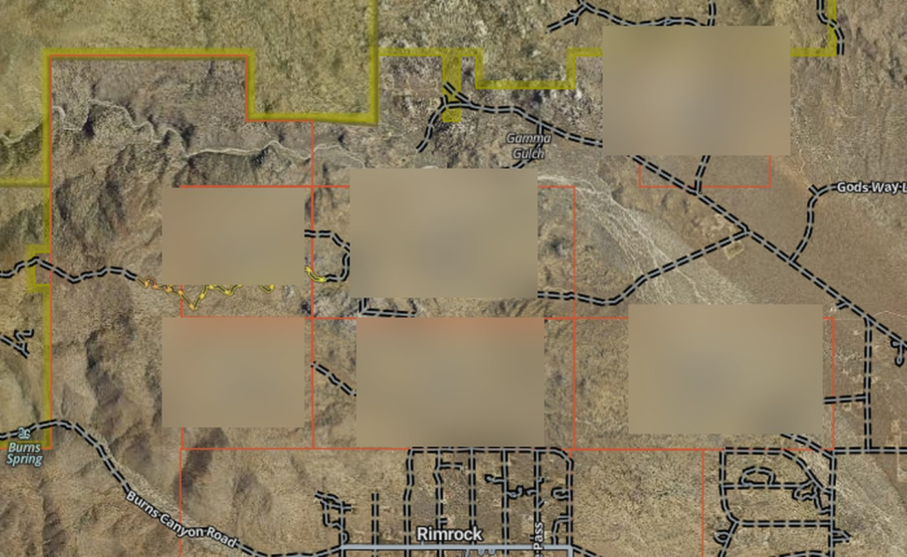
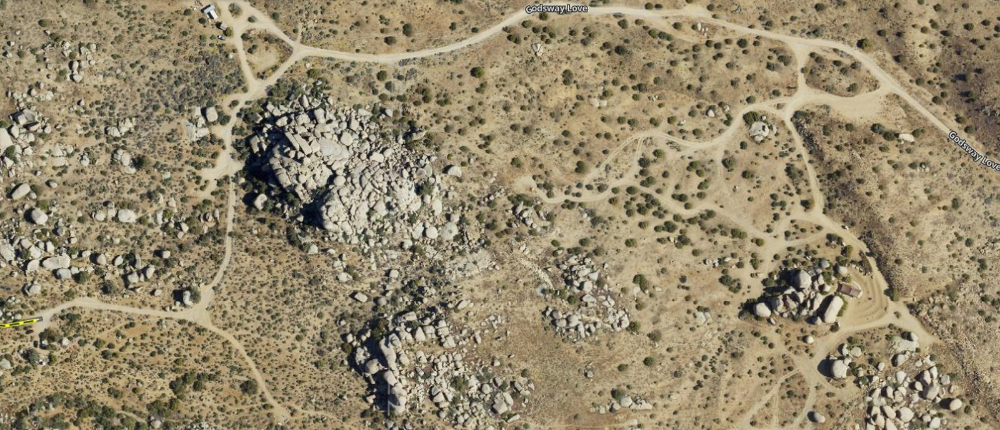

Weather
Temperature, wind, rain, cloud cover, and unusual events.
Natural Systems
A seasonal record of weather, wildlife, vegetation, soil, fire, and the small changes that reveal the desert.

Temperature, wind, rain, cloud cover, and unusual events.
Tracks, calls, nests, sightings, and camera observations.
Flowering, fruiting, dormancy, stress, and recovery.
Moisture, temperature, compost, texture, and erosion.
Fuel, visibility, heat, wind, and fire-watch observations.
Repeated photographs and measurements from fixed locations.
Not every observation needs an explanation. Some only need a date.
Land & Ecology · Community observation
Walking the boundary of Boulder Gardens
On February 23, 2026, members of the Boulder Gardens community spent the day walking the perimeter of the sanctuary. The route crossed ridges, washes, boulder fields, roads, and open desert around the 640-acre property.
The walk took about eight hours. The distance was roughly six miles—an estimate rather than a recorded GPS track—and the constant climbing and descending made the scale of the land much more tangible than a map alone can.
It was both an observation day and a shared experience: a way to learn the sanctuary by moving through its edges together.

Reading the land
A map gives the outline; walking gives the scale, grade, texture, and effort.


“The map gives the outline. Walking gives the scale.”
Photographic record
A sequence from the day: setting out, crossing open ground, finding a survey marker, climbing for perspective, and finishing together.


Field note: the approximately six-mile distance is an estimate; no complete GPS track was recorded for this walk. Map reference imagery is included as archival context and has been cropped for the public site.